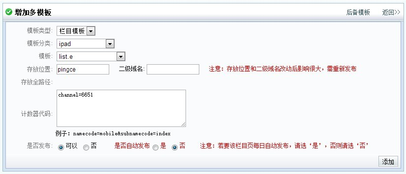

<!doctype HTML>
<html>
<head>
<meta http-equiv="content-type" content="text/html; charset=utf-8"/>
<meta name="viewport" content="initial-scale=1.0,maximum-scale=1.0,user-scalable=no"/>
<title>太平洋CMS多模版操作指南</title>
<meta name="keywords" content="太平洋CMS多模版操作指南">
<meta name="description" content="太平洋CMS多模版操作指南">
<meta name="author" content="zhuanghuanbin" />
<link href="style.css" rel="stylesheet" type="text/css" />
</head>
<body>
<div class="part">
<div class="tit">1、什么是CMS多模版？</div>
<p>随着移动端互联网的不断发展，移动端的浏览比重也越来越大，我们迫切的需要一个功能：对于CMS出的内容和数据，需要用几种不同的方式展现在用户面前。比如对于编辑录入的一篇文章，以往只是在该栏目配置一个文章模板，这篇文章就会用这个模板的形式展示出来，假如后期需要不同的展示形式，则需要修改模板或者换另一个模板，然后重新发布文章，至始至终一篇文章的展示形式只能局限于一种，而现在新增的多模版功能，即是可以在同一个栏目同时配置几个文章模板（当然也包括栏目模板），文章发布之后，就可以同时有不同的链接对应几种不同的展示形式。</p>
<br />
<br />
<br />
<br />
<div class="tit">2、CMS中多模版功能设置详解</div>
<p><strong>目前CMS中存在以下几种多模版：</strong></p>
<p>main：PC版（也就是主模板，电脑PC端浏览的版本）</p>
<p>wap_3g：炫版（也叫触屏版，高级智能手机浏览的版本）</p>
<p>wap：简版（低端手机浏览的版本）</p>
<p>ipad：iPad版（iPad平板浏览的版本）</p>
<p>还有其他一些特殊定制的版本，比如汽车某些栏目的图片模式，亲子宝典APP的特殊定制版本，还有刚上线的other版本（other版本主要用于输出分页json用于加载分页数据）等等。</p>
<p><span class="tip">特别说明：以上main，wap_3g，wap，ipad这四个是这些版本的识别标志，代码中用于区分不同的模板功能。</span></p>
<br />
<p><strong>配置前的必要设置</strong></p>
<p>由于各个移动端版本都有不同的链接和域名，因此，在配置前需要进行链接和域名的配置，设置相应的链接规则，这个过程请与CMS相关开发负责人联系设置。</p>
<p><em>以下举例汽车网设定好的规则：</em></p>
<br />
<p>main（主模板）栏目真实链接地址：<a href="http://www.pcauto.com.cn/pingce/" target="_blank">http://www.pcauto.com.cn/pingce/</a></p>
<p>main（主模板）文章真实链接地址：<a href="http://www.pcauto.com.cn/pingce/346/3466061.html" target="_blank">http://www.pcauto.com.cn/pingce/346/3466061.html</a></p>
<p><span class="tip">特别说明：主模板不用设定，但还是具体说一下，以上pingce表示栏目存放位置，3466061是文章ID，346是该篇文章ID减去后四位的数字（特别注意！不是文章ID前三个数字，而是文章ID减去后四位得到的数字）。</span></p>
<br />

<p>wap_3g（炫版模板）栏目真实链接地址：<a href="http://www.pcauto.com.cn/3g/wap2013/x/pingce/" target="_blank">http://www.pcauto.com.cn/3g/wap2013/x/pingce/</a></p>
<p>wap_3g（炫版模板）栏目线上地址：<a href="http://m.pcauto.com.cn/x/pingce/" target="_blank">http://m.pcauto.com.cn/x/pingce/</a></p>
<p>wap_3g（炫版模板）文章真实链接地址：<a href="http://www.pcauto.com.cn/3g/wap2013/x/346/3466061.html" target="_blank">http://www.pcauto.com.cn/3g/wap2013/x/346/3466061.html</a></p>
<p>wap_3g（炫版模板）文章线上地址：<a href="http://m.pcauto.com.cn/x/346/3466061.html" target="_blank">http://m.pcauto.com.cn/x/346/3466061.html</a></p>

<br />

<p>wap（简版模板）栏目真实链接地址：<a href="http://www.pcauto.com.cn/3g/2012/pingce/" target="_blank">http://www.pcauto.com.cn/3g/2012/pingce/</a></p>
<p>wap（简版模板）栏目线上地址：<a href="http://m.pcauto.com.cn/pingce/" target="_blank">http://m.pcauto.com.cn/pingce/</a></p>
<p>wap（简版模板）文章真实链接地址：<a href="http://www.pcauto.com.cn/3g/2012/346/3466061.html" target="_blank">http://www.pcauto.com.cn/3g/2012/346/3466061.html</a></p>
<p>wap（简版模板）文章线上地址：<a href="http://m.pcauto.com.cn/346/3466061.html" target="_blank">http://m.pcauto.com.cn/346/3466061.html</a></p>
<p><span class="tip">特别说明：目前还未出ipad版，因此ipad版链接规则还未设定。</span></p>

<br />
<p><strong>如何配置多模版功能？</strong></p>

<p>首先需要在CMS后台配置相关参数（系统管理员才有权限）</p>
<p><em>1. 设置系统配置-多模板分类</em></p>
<p></p>
<p></p>
<p><em>2.系统平台路径配置</em></p>
<p></p>
<p>名称：由多模板名和编码组成（中间用分号隔开）</p>
<p>根路径：此栏目/文章存放后台的目录（对前台来说是透明的）</p>
<p>根域名：需要网络配置，对根路径下的页面进行网络跳转</p>
<p>相对路径：添加子目录</p>

<p>举例：汽车网-汽车评测 栏目添加序号为1的多模板</p>
<p>pc端路径：<a>http://www.pcaut.com.cn/pingce/</a></p>

<p>wap真实路径：<a>http://www.pcauto.com.cn/3g/2012/pingce/</a></p>
<p>wap二级域名路径：<a>http://m.pcauto.com.cn/pingce/</a></p>

<p>wap_3g真实路径：<a>http://www.pcauto.com.cn/3g/2012/x/pingce/</a></p>
<p>Wap_3g二级域名路径：<a>http://m.pcauto.com.cn/x/pingce/</a></p>

<p>other真实路径：<a>http://www.pcauto.com.cn/other/pingce/</a></p>
<p>other二级域名路径：<a>http://m.pcauto.com.cn/other/pingce/</a></p>

<p>Ipad真实路径：<a>http://www.pcauto.com.cn/ipad/pingce/</a></p>
<p>Ipad二级域名路径：<a>http://ipad.pcauto.com.cn/pingce/</a></p>


<p><em>3.让我们在“汽车评测”这个栏目，新增一个ipad（iPad版）栏目多模版为例，过一下具体的操作流程。</em></p>
<p>进入栏目管理，我们可以看到</p>
<p></p>
<p>在栏目管理页面的功能区中左右两边多了“多模版”和“多模版预览”功能按钮，点击进入多模版进行具体的设置</p>
<p></p>
<p>在上图可以看到，目前已经存在4个多模版，分别是wap_3g炫版栏目多模版、wap_3g炫版文章多模版、wap简版文章多模版、wap简版栏目多模版，让我们点击右上角“添加”。</p>
<p></p>
<p>在新增多模版页面中有以下的选项：</p>
<p>模板类型：栏目模板或者文章模板（我们选栏目模板）</p>
<p>模板分类：wap_3g或wap或ipad，分别对应三个不同的移动端版本（我们选ipad）</p>
<p>模板：选择我们做好的用于ipad版本的栏目模板</p>
<p>存放位置：默认与main（主模板）存放位置一致（默认配置，不用填）</p>
<p>计数器代码：用于多模版文章或者栏目的计数，有继承性，与main（主模板）规则一致。</p>
<p>是否发布：规则与main（主模板）一致。初始设置中，自动发布规则是默认与main（主模板）一致的，但后期也可以进行修改。</p>
<p></p>
<p>设置完成！！</p>
<p></p>
<p>这样我们就完成了一个ipad栏目多模版的配置。</p>
<p></p>

<br />
<br />

<div class="tit">3、多模版操作中需要特别注意的点</div>
<p><strong>如果想对整站的文章发多一个wap_3g（炫版），每个栏目都手动添加肯定不现实，如何批量添加？</strong></p>
<p>请提供具体的多模版配置，比如模板类型、模板分类、模板名等，然后联系CMS开发的同事进行批量添加。</p>
<p>对于文章多模版，具体添加规则是：如果某个栏目main（主模板）有文章模板，那么该栏目也相对应的加上文章多模版，如果没有就不加。</p>
<p>对于栏目多模版，一般来说没有全站栏目都发同一个栏目多模版的需求，因此如果栏目较少的情况下还是手动添加。</p>
<br />
<p><strong>已经对整站的文章都批量添加了多模版，并且已经发了文章，保证了现阶段整站的文章都有对应的多模版文章了，但是对于之后新增的栏目，还是没有添加多模版，并且我们无法知道整站以后的栏目添加和删除情况，这意味着对于这些新增的栏目和文章，还是没有相应的多模版，如何解决？</strong></p>
<p>针对这个情况，CMS新增了继承性的多模版全局配置和栏目配置，对新增的栏目自动添加多模版。</p>
<p>多模版全局配置请联系CMS开发同事进行配置，比如汽车网现在的配置规则是</p>
<pre>wap,文章,wap_2012_art.a;wap_3g,文章,wap2013_art.a</pre>
<p><span class="tip">说明：以分号分隔每条多模版配置，以逗号分隔具体设置情况，上面的设置意思为：对以后新增的栏目自动添加wap（简版）文章多模版，模板名为wap_2012_art.a，并且也自动添加wap_3g（炫版）文章多模版，模板名为wap2013_art.a，比如还想对以后新增的栏目添加名为wap2013_list.a的wap_3g（炫版）栏目多模版，那么配置为</span></p>
<pre>wap,文章,wap_2012_art.a;wap_3g,文章,wap2013_art.a;wap_3g,栏目,wap2013_list.a</pre>
<br />
<p><strong>解决了自动添加多模版的问题，那如果对于一些新增的栏目，我们不想让这些栏目应用跟全局配置一样的设置，比如汽车百科这个栏目，用到的wap_3g（炫版）文章多模版是wap2013_bk_art.a，跟全局配置不一致了，我们想让这个栏目下以后新增的子栏目也应用wap2013_bk_art.a这个文章模板，如何解决？</strong></p>
<p>CMS同样也提供了多模版栏目配置，可以在该栏目变量里添加名为multiTplDefaultConf的配置，参数值可以自己设定，规则与全局配置一致，比如现在汽车百科的多模版栏目配置如下</p>
<p></p>
<pre>wap,文章,wap_2013_art.a;wap_3g,栏目,wap2013_bk_stype.a;wap_3g,文章,wap2013_bk_art.a</pre>
<p>配置了multiTplDefaultConf多模版栏目配置之后，程序已经检测到该栏目已经有相对应的自动添加规则，因此不再向上检索应用全局配置（检测没有栏目配置才应用全局）</p>
<br />
<p><strong>对于一些栏目（比如测试栏目）不需要让它自动添加多模版，如何解决？</strong></p>
<p></p>
<p>设定该栏目的栏目变量multiTplDefaultConf值为0</p>
<br />
<p><strong>某个栏目本来是有配置main（PC版）栏目模板和文章模板的，因此多模版也自动配上了，但是后来main（PC版）不需要栏目或者文章模板了，编辑或前端开发同事手动设置删除了模板，但是没有相对应也删除多模版的，怎么办？</strong></p>
<p>少年别当心，程序也已做了自动检测，主模板不选择（被删除），那么多模版也被自行删除。</p>
<br /> 
<p><strong>对于程序自动添加的多模版，可以改多模版配置吗？</strong></p>
<p>可以</p>
<br />
<p><strong>多模版的发布规则是怎么样的呢？</strong></p>
<p>初始设置是跟着main（PC版）走，main（PC版）是什么设置多模版就是什么设置，但是后期允许可以在多模版配置里面自己改.</p>


<br />
<br />
<br />
<br />
<br />
<br />


<div class="tit">4、CMS多模版中相关代码</div>
<p><strong>以json形式出各个多模版的对应文章链接</strong></p>
<pre>
<c:set var="articleId"><cms:article property='id'>{文章ID}</cms:article></c:set>
<data:multiUrl id="${articleId}" property="article" kind="json" mtplCate="wap_3g,wap,ipad,main" result="multiUrl"/>
${multiUrl}
</data:multiurl>
</pre>
<p><span class="tip">对于id为3471819这篇文章，以上代码输出</span></p>
<pre>
{"wap":"http:\/\/m.pcauto.com.cn\/347\/3471819.html","wap_3g":"http:\/\/m.pcauto.com.cn\/x\/347\/3471819.html","main":"http:\/\/www.pcauto.com.cn\/nation\/347\/3471819.html"}
</pre>
<p><span class="tip">由于截止到目前为止还没有ipad版，因此没有ipad版的连接。</span></p>
<br />

<p><strong>类推，以json形式出各个多模版的对应栏目链接</strong></p>
<pre>
<c:set var="channelId"><cms:channel property="id">{栏目ID}</cms:channel></c:set>
<data:multiUrl id="${channelId}" property="channel" kind="json" mtplCate="wap_3g,wap,ipad,main" result="multiUrl"/>
${multiUrl}
</data:multiurl>
</pre>
<p><span class="tip">对于新车nation这个栏目，以上代码输出</span></p>
<pre>
{"wap":"http:\/\/m.pcauto.com.cn\/nation\/","ipad":"http:\/\/ipad.pcauto.com.cn\/nation\/","wap_3g":"http:\/\/m.pcauto.com.cn\/x\/nation\/","main":"http:\/\/www.pcauto.com.cn\/nation\/"}
</pre>
<p><span class="tip">由于截止到目前为止还没有ipad版，因此没有ipad版的连接。</span></p>


<br />
<p><strong>出多模版相对应的文章内容格式</strong></p>
<p><span class="tip">特别说明：各个多模版有特殊定制的文章内容格式，比如对于wap_3g（炫版）的文章来说，程序会对文章内容进行过滤和正则匹配，去掉多余标签以及把原本是PC版的链接换成炫版的链接，所以多模版的文章内容和格式几乎都不一样。mtext只能用在多模板发布中,它是根据多模板的分类自行选择所设分类过滤文章内容</span></p>
<pre><cms:article property="mtext">{文章}</cms:article></pre>
<br />
<p><strong>如果想在wap_3g（炫版）的多模版中出wap（简版）的文章格式呢？那么就在wap_3g（炫版）的模板中写</strong></p>
<pre>
<cms:article  property="otext" mtplCate="wap" >{文章}</cms:article>
</pre>
<p><span class="tip">特别说明：以上按指定的wap模板规则对文章内容过滤，页内链点也是wap规则。</span></p>
<br />

<p><strong>类推</strong></p>

<pre>
<cms:article  property="otext" mtplCate="wap_3g" >{文章}</cms:article>
</pre>
<p><span class="tip">特别说明：以上按指定的wap_3g模板规则对文章内容过滤，页内链点也是wap_3g规则。</span></p>

<pre>
<cms:article  property="otext" mtplCate="ipad" >{文章}</cms:article>
</pre>
<p><span class="tip">特别说明：以上按指定的ipad模板规则对文章内容过滤，页内链点也是ipad规则。</span></p>
<br />

<p><strong>一种新增的分页结构，具体请查询CMS手册</strong></p>
<pre>
<cms:pager property="wap_x"/></cms:pager>
</pre>
<br />

<p><strong>指定多模板分类mtplCate，取的则是对应分类多模板的文章URL。其中mtplCate="main"则取的是文章主模板的URL。</strong></p>
<pre>
<cms:article property='_url' mtplCate='wap_3g | wap | ipad | main'>{文章url}</cms:article>
</pre>
<br />
<br />
<br />
<br />


<div class="tit">5、UA判断跳转规则</div>
<p><strong>目前，6网整站有通用的UA判断跳转规则：</strong></p>
<p>最新插件存放目录：SVN\wap\2013\Common\</p>
<p>用法如下：在页面头部引用该插件，然后调用代码：</p>
<pre>
deviceJump.init({
	'main' : 'http://www.pcauto.com.cn/',//要跳转的PC端链接
	'wap_3g' : 'http://m.pcauto.com.cn/',//要跳转的炫版链接
	'wap' : 'http://m.pcauto.com.cn/w/',//要跳转的简版链接
	'ipad' : 'http://ipad.pcauto.com.cn/'//要跳转的iPad版链接
},function(name,jsonUrl){
	//doing sth
	//说明 : name为判断得出当前的设备版本 , jsonUrl为第一个参数的链接json
});
</pre>
<p><span class="tip">特别说明：在6网cms中，分别有6个对应的内嵌引用该插件代码，然后再把该内嵌做成供外接口，这样做的好处是：对于文章页需要重发的可以引用供外接口，这样供外接口一更新文章页就自动更新，方便修改不用重发文章，对于一些每天都自动更新的栏目（比如首页）就可以引用内嵌，节省了一个http请求。</span></p>


<p>插件默认跳转规则：判断出当前设备版本wap_3g / wap / ipad / main，然后执行用户自定义的函数（该函数可缺省），执行完进入以下判断条件</p>
<p>如果来源不为空,并且跟当前连接同源（比如同是pcauto.com.cn的域名）的情况下,并且来源不包含mrobot关键字（这是为了兼容mrobot出的页面）,则不跳转</p>
<p>如果是电脑访问,则统一不跳转</p>
<p>如果不存在要跳转版本的链接 或者 跳转版本的链接为空 或者 跳转的链接不全(检测到没有http关键字),则不跳转</p>
<p>如果检测到window.location.search有不跳转标识（?type=checked）,则不启动跳转机制</p>
<p>当前链接有cms.pc关键字,不跳转（让cms预览页面不跳转）</p>
<p>处理ad（参数后带ad计数标识，则跳转后的链接也带过去）</p>
<p>如果当前连接与将要跳转的链接相同,也不跳转（解决多次重复跳转bug）</p>
<p>最后才跳转到用户指定的链接。</p>
<p><span class="tip">特别说明：对于Window phone手机，现阶段还是跳简版。</span></p>
<p></p>
<p></p>
<p></p>
<p></p>
</div>


<script type="text/javascript">
//格式化源码
var pres = document.getElementsByTagName('pre');
for (var i = 0 , len=pres.length; i < len ; i++) {
	pres[i].innerHTML = String(pres[i].innerHTML).replace(/</g,"&lt;").replace(/>/g,"&gt;");
}
</script>


</body>
</html>